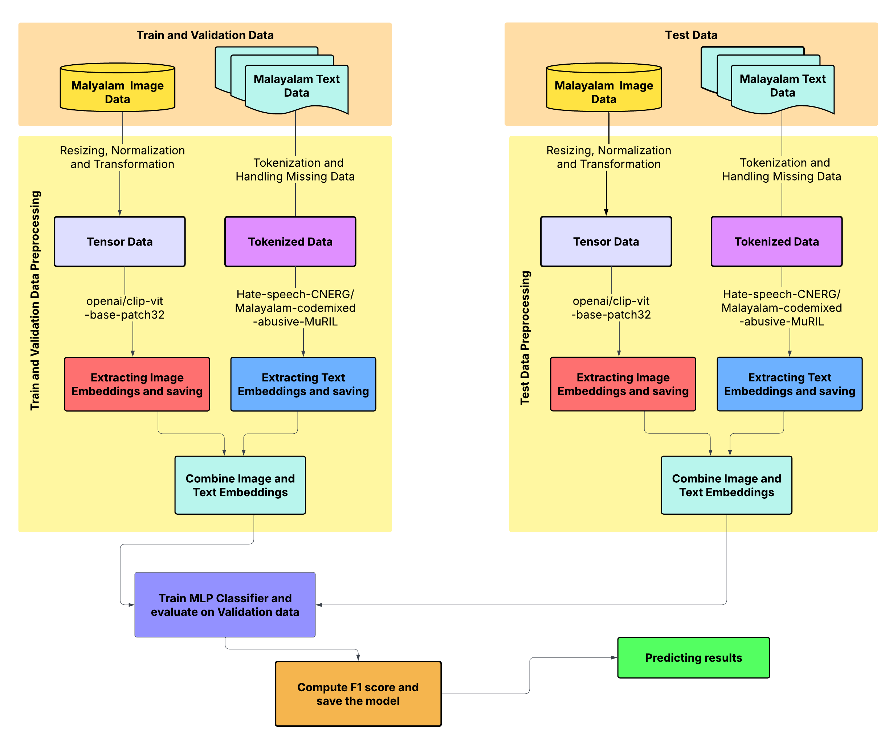
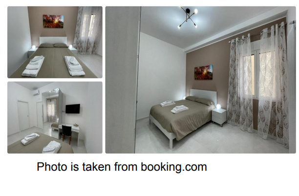
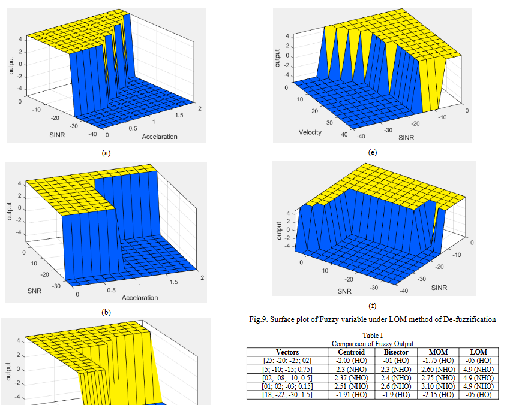
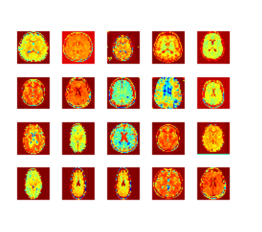
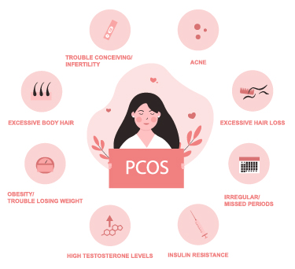
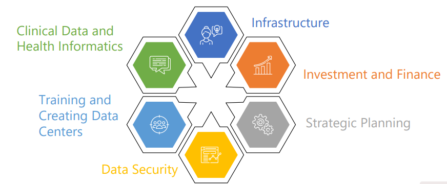

Ongoing Research
Prompt Optimization, Memetic Algorithms & Agentic AI (Boise State University, Fall 2025–Present) In Progress
Under the supervision of Dr. Edoardo Serra in the Artificial Intelligence and Security Lab, I am developing memetic-algorithm approaches for prompt optimization, studying how evolutionary search can improve LLM prompting strategies. This line of work also connects to agentic AI systems and prompt injection robustness. The project is active and not yet published.
LLM Metacognition (Boise State University, Fall 2025–Present) In Progress
I am investigating LLM metacognition by analyzing how models behave under standard versus optimized prompts on a curated dataset. The goal is to characterize differences in reasoning, confidence, and response quality between baseline and optimized prompting strategies, and to better understand when and why optimized prompts change model behavior. This work is ongoing and not yet published.
Publications

Neelima Monjusha Preeti, Trina Chakraborty, Noor Mairukh Khan Arnob, Saiyara Mahmud, Azmine Toushik Wasi (2025). Ensemble Approach for Misogyny Detection in Memes Using Pre-trained Text and Vision Transformers, Fifth Workshop on Speech, Vision, and Language Technologies for Dravidian Languages (DravidianLangTech-2025). Published
This study focuses on misogynistic memes in Tamil and Malayalam, two Dravidian languages with limited resources. It uses computer vision and natural language processing for multi-modal detection, using CLIP embeddings for vision and BERT models trained on hate speech datasets for text. The integrated approach achieves a Macro F1 Score of 0.7800 for Tamil and 0.8748 for Malayalam.

Emrul Hasan, Chen Ding, Sajib Saha, Neelima Monjusha Preeti and Abdul Halim (2024). Accommodation Review Ranking for Tourism Recommendation (RecTour 2024), co-located with ACM RecSys, Bari, Italy. Published
Reviews significantly impact users’ decisions, but traditional ranking methods often fail to capture preferences. This work ranks reviews using similarity-based user and item profiles, Sentence Transformer features, and cosine similarity to improve recommendation relevance.

Neelima Monjusha Preeti, Faiza Feroz, Dr. Md. Imdadul Islam (2023). Handover Detection of WAN using FIS, Jahangirnagar University Journal of Electronics and Computer Science. Published
This paper introduces a Fuzzy Inference System for handover detection in high-speed WAN settings using velocity, SNR, SINR, and acceleration. Four defuzzification methods are evaluated, each achieving over 92% accuracy.
Thesis

Neelima Monjusha Preeti, Dr. Md. Imdadul Islam (2024). Detection of Brain Tumor from MRI Image under Deep Learning and Bag of Features Algorithm [Master’s Thesis]
This research focuses on detecting brain tumors in MRI images using preprocessing and pseudo-coloring, followed by CNN and LSTM training. The Bag-of-Features (BoF) algorithm is applied to the preprocessed dataset to support accurate detection.
In Preparation

Neelima Monjusha Preeti, Sushmoy Barua, Anup Majumdar (2024). Feature Ranking for Polycystic Ovary Syndrome (PCOS) Detection using XAI from Ultrasound Images In Preparation
This work applies explainable AI to deep learning models for PCOS detection from ultrasound images, ranking clinically meaningful features such as ovarian volume, follicle count, and stromal area to improve transparency and support more interpretable diagnosis.
Selected Earlier Work

Neelima Monjusha Preeti, Rubaiya Reza Sohana, Sabrina Afrin Toma (2021). Building Rich Community with DHR System and using ML for Decision Making ensuring Enriched Health Facility and eradicating Health Myths [International Poster Competition]
This proposal introduces a Digital Health Record system supported by regional health workers and machine learning for predictive modeling, aiming to strengthen community health outcomes in resource-constrained settings.